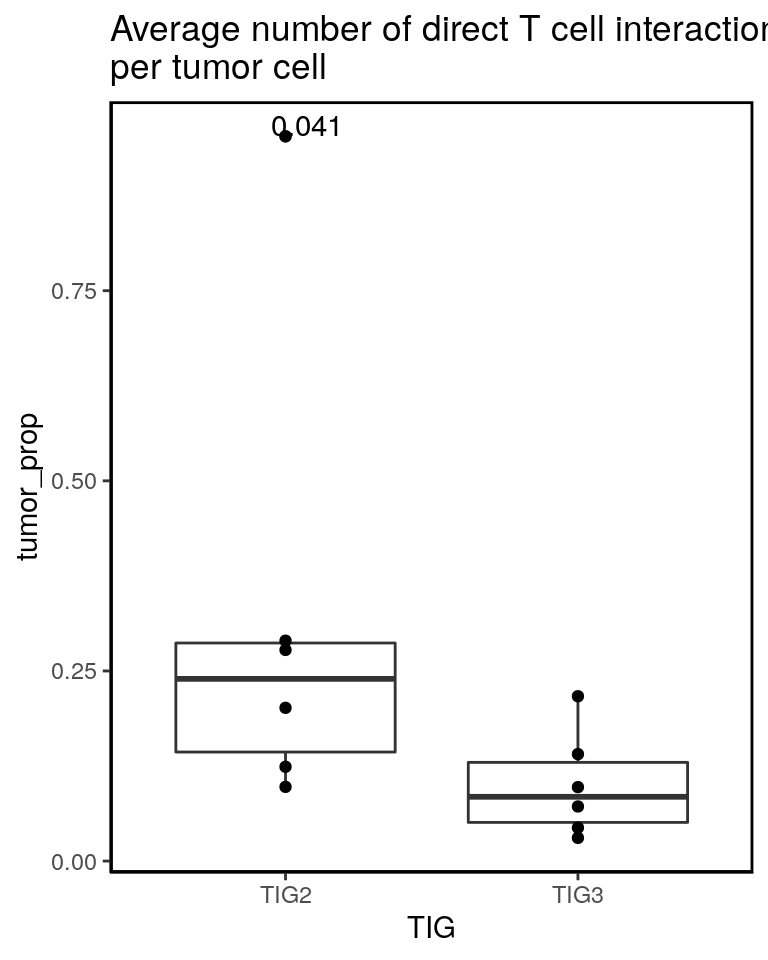
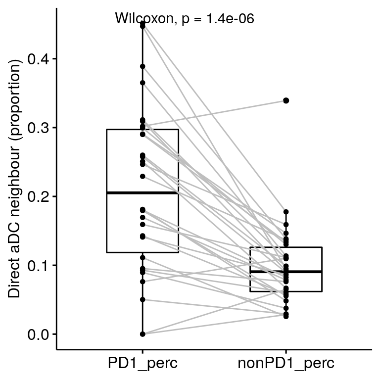
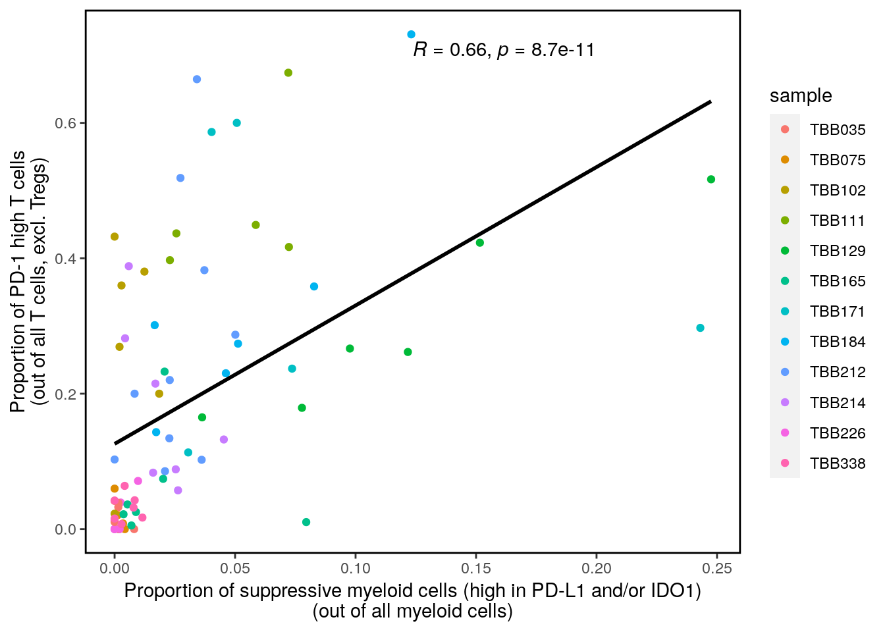

13_proteinPanel_neighbourhood_extended
SandraTietscher
2020-11-23
Last updated: 2021-06-09
Checks: 7 0
Knit directory: BCexh_IMC/
This reproducible R Markdown analysis was created with workflowr (version 1.6.2). The Checks tab describes the reproducibility checks that were applied when the results were created. The Past versions tab lists the development history.
Great! Since the R Markdown file has been committed to the Git repository, you know the exact version of the code that produced these results.
Great job! The global environment was empty. Objects defined in the global environment can affect the analysis in your R Markdown file in unknown ways. For reproduciblity it’s best to always run the code in an empty environment.
The command set.seed(12345) was run prior to running the code in the R Markdown file. Setting a seed ensures that any results that rely on randomness, e.g. subsampling or permutations, are reproducible.
Great job! Recording the operating system, R version, and package versions is critical for reproducibility.
Nice! There were no cached chunks for this analysis, so you can be confident that you successfully produced the results during this run.
Great job! Using relative paths to the files within your workflowr project makes it easier to run your code on other machines.
Great! You are using Git for version control. Tracking code development and connecting the code version to the results is critical for reproducibility.
The results in this page were generated with repository version 0f5d816. See the Past versions tab to see a history of the changes made to the R Markdown and HTML files.
Note that you need to be careful to ensure that all relevant files for the analysis have been committed to Git prior to generating the results (you can use wflow_publish or wflow_git_commit). workflowr only checks the R Markdown file, but you know if there are other scripts or data files that it depends on. Below is the status of the Git repository when the results were generated:
Ignored files:
Ignored: .RData
Ignored: .Rhistory
Ignored: .Rproj.user/
Ignored: analysis/.Rhistory
Untracked files:
Untracked: BB184_aDC_PD1.png
Untracked: BB212_aDC_PD1.png
Untracked: BB212_aDC_PD1_Bcells.png
Untracked: CD11c_CD68_scatter.png
Untracked: Neighbourhood_TLS_relative.png
Untracked: Neighbourhood_all_relative.png
Untracked: PD1_tumor_neighbour_boxplot.png
Untracked: RNApanel_ROImean_HLAABC_CXCL13protein.png
Untracked: RNApanel_ROImean_HLAABC_CXCL13rna.png
Untracked: RNApanel_nonrandom_clusters.pdf
Untracked: TBB129_aDC_PD1.png
Untracked: TBB129_aDC_PD1_Bcell.png
Untracked: TNK_perc_proliferating.pdf
Untracked: analysis/15_spatial_TLS.Rmd
Untracked: analysis/XX_RNApanel_neighbourhood.Rmd
Untracked: analysis/spicyR.Rmd
Untracked: barplot_tumorSubtype_image.pdf
Untracked: code/generate_fullSCEs_for_Zenodo.Rmd
Untracked: cytokine_environment.png
Untracked: cytokine_exprs_TLS.pdf
Untracked: data/RNAseq_Tcells.rds
Untracked: data/RNAseq_epithelial.rds
Untracked: data/ROI_info_HIER.csv
Untracked: data/ROI_info_RNAscope.csv
Untracked: data/cpout/
Untracked: data/masks/
Untracked: heatmap_markerexpression_myeloid_sub.png
Untracked: neighbourhood_myeloid_TIGdifference.png
Untracked: neighbourhood_myeloid_TLS_relative.png
Untracked: neighbourhood_myeloid_all_relative.png
Untracked: neighbourhood_myeloid_split_TLS.png
Untracked: output/ProteinPanel/
Untracked: output/RNApanel/
Untracked: output/TLS_score_25samples.png
Untracked: output/sce_ProteinPanel_afterQC.rds
Untracked: output/sce_ProteinPanel_initial.rds
Untracked: output/sce_ProteinPanel_initial_TLSrevised.rds
Untracked: output/sce_RNApanel_afterQC.rds
Untracked: output/sce_RNApanel_initial.rds
Untracked: output/sce_RNApanel_initial_TLSrevised.rds
Untracked: proteinPanel_PCA_HLAABC_PD1_CD274.png
Untracked: proteinPanel_ROImean_HLAABC_PD1.png
Untracked: proteinPanel_ROImean_HLAABC_PDL1.png
Untracked: test.pdf
Unstaged changes:
Modified: BCexh_IMC.Rproj
Modified: analysis/11_RNAscope_cytokine_communities.Rmd
Modified: analysis/12_RNApanel_CXCL13_protein.Rmd
Note that any generated files, e.g. HTML, png, CSS, etc., are not included in this status report because it is ok for generated content to have uncommitted changes.
These are the previous versions of the repository in which changes were made to the R Markdown (analysis/13_proteinPanel_neighbourhood_extended.Rmd) and HTML (docs/13_proteinPanel_neighbourhood_extended.html) files. If you’ve configured a remote Git repository (see ?wflow_git_remote), click on the hyperlinks in the table below to view the files as they were in that past version.
| File | Version | Author | Date | Message |
|---|---|---|---|---|
| Rmd | 0f5d816 | SandraTietscher | 2021-06-09 | Correct mismatched ImageNumbers |
| html | fa0fc7e | SandraTietscher | 2021-05-03 | Build site. |
| Rmd | 4e0bc19 | SandraTietscher | 2021-05-03 | Add quantification of direct T-cell - tumor interaction |
| html | 8b46e20 | SandraTietscher | 2021-04-30 | Build site. |
| Rmd | c24207c | SandraTietscher | 2021-04-30 | Correct mistake when subsetting images for direct interaction analysis |
| html | 77a4593 | SandraTietscher | 2021-02-15 | Build site. |
| Rmd | 90945f8 | SandraTietscher | 2021-02-15 | Add validation of T-cell suppressive gene signature |
| html | 4a98d61 | SandraTietscher | 2020-12-04 | Build site. |
| html | 018772a | SandraTietscher | 2020-11-25 | Build site. |
| Rmd | c56382a | SandraTietscher | 2020-11-25 | Script for more targeted neighbourhood analysis |
Introduction
This script looks in detail at selected cell type interactions
Load libraries and data
# Load libraries
library(SingleCellExperiment)
library(data.table)
library(dplyr)
library(magrittr)
library(ggplot2)
library(gplots)
library(RColorBrewer)
library(tidyr)
library(ggpubr)
library(dittoSeq)
# Read SingleCellExperiment object
sce_protein <- readRDS("output/ProteinPanel/sce_ProteinPanel_subtypes_all.rds")
# Read object relationship file (output from Cellprofiler)
dat_relation <- fread("data/cpout/Object_relationships_ProteinPanel.csv")
dat_relation$cellA <- paste0(dat_relation$`First Image Number`, "_", dat_relation$`First Object Number`)
dat_relation$cellB <- paste0(dat_relation$`Second Image Number`, "_", dat_relation$`Second Object Number`)
# ROI info
ROI_info <- read.csv("data/ROI_info_HIER_TLSrevised.csv")
ROI_info$HIER_ImageNumber <- c(1:77)
#TLS image numbers
nonTLS_nr <- filter(ROI_info, TLS == "no")$HIER_ImageNumber
TLS_nr <- filter(ROI_info, TLS %in% c("pre", "yes"))$HIER_ImageNumber
TIG2 <- c("TBB111", "TBB129", "TBB165", "TBB171", "TBB184", "TBB338")Quantify direct T cell - tumor cell interaction
# Exclude TLS images
sce_noTLS <- sce_protein[,which(sce_protein$TLS == "no")]
cur_sce <- data.frame(colData(sce_noTLS))
df <- data.frame(matrix(nrow=0, ncol =4))
for (i in unique(cur_sce$sample)){
cur_sce_i <- cur_sce[cur_sce[,"sample"] == i,]
# get T cell and tumor cell IDs
cellIDs_Tcell <- cur_sce_i[cur_sce_i[,"celltype"] == "T_NK",]
Tcell_shortID <- paste0(cellIDs_Tcell$HIER_ImageNumber, "_", cellIDs_Tcell$CellNumber)
cellIDs_tumor <- cur_sce_i[cur_sce_i[,"celltype"] == "tumor",]
tumor_shortID <- paste0(cellIDs_tumor$HIER_ImageNumber, "_", cellIDs_tumor$CellNumber)
# subset neighbourhood list to include only `T cell <-> tumor cell` interactions
dat_relation_sub <- dat_relation %>% filter((cellA %in% Tcell_shortID & cellB %in% tumor_shortID))
# count interactions
intnr_i <- nrow(dat_relation_sub)
# divide through T cell nr
intnr_Tcell_prop <- intnr_i/length(Tcell_shortID)
# divide through T cell nr
intnr_tumor_prop <- intnr_i/length(tumor_shortID)
new_row <- c(i, intnr_i, intnr_Tcell_prop, intnr_tumor_prop)
df <- rbind(df, new_row)
}
colnames(df) <- c("sample", "total_interactions", "Tcell_prop", "tumor_prop")
df[,2:4] <- df[,2:4] %>% mutate_if(is.character,as.numeric)
df$TIG <- ifelse(df$sample %in% TIG2, "TIG2", "TIG3")
ggplot(df, aes(TIG, Tcell_prop))+
geom_boxplot()+
geom_point(position=position_dodge(width=0.75))+
stat_compare_means(method = "wilcox.test", aes(label=..p.format..))+
theme(axis.line.x = element_line(colour = "black", size = 0.25),
axis.line.y = element_line(colour = "black", size = 0.25),
panel.grid.major = element_blank(),
panel.grid.minor = element_blank(),
panel.border = element_rect(colour = "black", fill=NA, size=1),
panel.background = element_blank(),
strip.background = element_blank()) + ggtitle("Average number of direct tumor cell interactions\nper T cell")
| Version | Author | Date |
|---|---|---|
| fa0fc7e | SandraTietscher | 2021-05-03 |
ggplot(df, aes(TIG, tumor_prop))+
geom_boxplot()+
geom_point(position=position_dodge(width=0.75))+
stat_compare_means(method = "wilcox.test", aes(label=..p.format..))+
theme(axis.line.x = element_line(colour = "black", size = 0.25),
axis.line.y = element_line(colour = "black", size = 0.25),
panel.grid.major = element_blank(),
panel.grid.minor = element_blank(),
panel.border = element_rect(colour = "black", fill=NA, size=1),
panel.background = element_blank(),
strip.background = element_blank()) + ggtitle("Average number of direct T cell interactions\nper tumor cell")
| Version | Author | Date |
|---|---|---|
| fa0fc7e | SandraTietscher | 2021-05-03 |
Likelihood of PD1-high T cells neighbouring tumor cells
For TIG2 images only (TIG3 images often have so few PD-1 T cells that it distorts the image).
cur_sce <- data.frame(colData(sce_protein))
cur_sce <- cur_sce[cur_sce[,"sample"] %in% TIG2,]
df <- data.frame(matrix(nrow=0, ncol =3))
for (i in unique(cur_sce$HIER_ImageNumber)){
cur_sce_i <- cur_sce[cur_sce[,"HIER_ImageNumber"] == i,]
# get T cell IDs
cellIDs_PD1 <- cur_sce_i[cur_sce_i[,"subtype"] %in% c("CD4_PD1", "CD8_PD1"),]
PD1_shortID <- paste0(cellIDs_PD1$HIER_ImageNumber, "_", cellIDs_PD1$CellNumber)
cellIDs_nonPD1 <- cur_sce_i[cur_sce_i[,"subtype"] %in% c("CD4", "CD8", "Treg"),]
nonPD1_shortID <- paste0(cellIDs_nonPD1$HIER_ImageNumber, "_", cellIDs_nonPD1$CellNumber)
# get tumor cell IDs
cellIDs_tumor <- cur_sce_i[cur_sce_i[,"celltype"] == "tumor",]
tumor_shortID <- paste0(cellIDs_tumor$HIER_ImageNumber, "_", cellIDs_tumor$CellNumber)
# subset neighbourhood list to include only `PD1-high T cell <-> tumor cell` interactions
dat_relation_sub_PD1 <- dat_relation %>% filter((cellA %in% PD1_shortID & cellB %in% tumor_shortID) | (cellB %in% PD1_shortID & cellA %in% tumor_shortID))
# extract PD1 IDs that border tumor cells
PD1_tumor_bordering <- setdiff(unique(c(dat_relation_sub_PD1$cellA, dat_relation_sub_PD1$cellB)), tumor_shortID)
PD1_perc <- length(PD1_tumor_bordering)/length(PD1_shortID)
# subset neighbourhood list to include only `PD1-low T cell <-> tumor cell` interactions
dat_relation_sub_nonPD1 <- dat_relation %>% filter((cellA %in% nonPD1_shortID & cellB %in% tumor_shortID) | (cellB %in% nonPD1_shortID & cellA %in% tumor_shortID))
# extract PD1 IDs that border tumor cells
nonPD1_tumor_bordering <- setdiff(unique(c(dat_relation_sub_nonPD1$cellA, dat_relation_sub_nonPD1$cellB)), tumor_shortID)
nonPD1_perc <- length(nonPD1_tumor_bordering)/length(nonPD1_shortID)
new_row <- c(i, PD1_perc, nonPD1_perc)
df <- rbind(df, new_row)
}
colnames(df) <- c("sample", "PD1_perc", "nonPD1_perc")
df[,2:3] <- df[,2:3] %>% mutate_if(is.character,as.numeric)
# Plot
ggpaired(df, cond1 = "PD1_perc", cond2 = "nonPD1_perc", line.color = "gray", ylab = "Direct tumor neighbour (proportion)", xlab = FALSE)+
stat_compare_means(paired = TRUE)
CD8 only, TIG2 only
cur_sce <- data.frame(colData(sce_protein))
cur_sce <- cur_sce[cur_sce[,"sample"] %in% TIG2,]
df <- data.frame(matrix(nrow=0, ncol =3))
for (i in unique(cur_sce$HIER_ImageNumber)){
cur_sce_i <- cur_sce[cur_sce[,"HIER_ImageNumber"] == i,]
# get T cell IDs
cellIDs_PD1 <- cur_sce_i[cur_sce_i[,"subtype"] == "CD8_PD1",]
PD1_shortID <- paste0(cellIDs_PD1$HIER_ImageNumber, "_", cellIDs_PD1$CellNumber)
cellIDs_nonPD1 <- cur_sce_i[cur_sce_i[,"subtype"] %in% c("CD8"),]
nonPD1_shortID <- paste0(cellIDs_nonPD1$HIER_ImageNumber, "_", cellIDs_nonPD1$CellNumber)
# get tumor cell IDs
cellIDs_tumor <- cur_sce_i[cur_sce_i[,"celltype"] == "tumor",]
tumor_shortID <- paste0(cellIDs_tumor$HIER_ImageNumber, "_", cellIDs_tumor$CellNumber)
# subset neighbourhood list to include only `PD1-high T cell <-> tumor cell` interactions
dat_relation_sub_PD1 <- dat_relation %>% filter((cellA %in% PD1_shortID & cellB %in% tumor_shortID) | (cellB %in% PD1_shortID & cellA %in% tumor_shortID))
# extract PD1 IDs that border tumor cells
PD1_tumor_bordering <- setdiff(unique(c(dat_relation_sub_PD1$cellA, dat_relation_sub_PD1$cellB)), tumor_shortID)
PD1_perc <- length(PD1_tumor_bordering)/length(PD1_shortID)
# subset neighbourhood list to include only `PD1-low T cell <-> tumor cell` interactions
dat_relation_sub_nonPD1 <- dat_relation %>% filter((cellA %in% nonPD1_shortID & cellB %in% tumor_shortID) | (cellB %in% nonPD1_shortID & cellA %in% tumor_shortID))
# extract PD1 IDs that border tumor cells
nonPD1_tumor_bordering <- setdiff(unique(c(dat_relation_sub_nonPD1$cellA, dat_relation_sub_nonPD1$cellB)), tumor_shortID)
nonPD1_perc <- length(nonPD1_tumor_bordering)/length(nonPD1_shortID)
new_row <- c(i, PD1_perc, nonPD1_perc)
df <- rbind(df, new_row)
}
colnames(df) <- c("sample", "PD1_perc", "nonPD1_perc")
df[,2:3] <- df[,2:3] %>% mutate_if(is.character,as.numeric)
# Plot
ggpaired(df, cond1 = "PD1_perc", cond2 = "nonPD1_perc", line.color = "gray", ylab = "Direct tumor neighbour (proportion)", xlab = FALSE)+
stat_compare_means(paired = TRUE)
Likelihood of PD1-high T cells neighbouring aDCs
For all samples.
cur_sce <- data.frame(colData(sce_protein))
df <- data.frame(matrix(nrow=0, ncol =3))
for (i in unique(cur_sce$sample)){
cur_sce_i <- cur_sce[cur_sce[,"sample"] == i,]
# get T cell IDs
cellIDs_PD1 <- cur_sce_i[cur_sce_i[,"subtype"] %in% c("CD4_PD1", "CD8_PD1"),]
PD1_shortID <- paste0(cellIDs_PD1$HIER_ImageNumber, "_", cellIDs_PD1$CellNumber)
cellIDs_nonPD1 <- cur_sce_i[cur_sce_i[,"subtype"] %in% c("CD4", "CD8", "Treg"),]
nonPD1_shortID <- paste0(cellIDs_nonPD1$HIER_ImageNumber, "_", cellIDs_nonPD1$CellNumber)
# get aDC IDs
cellIDs_aDC <- cur_sce_i[cur_sce_i[,"celltype"] == "aDC",]
aDC_shortID <- paste0(cellIDs_aDC$HIER_ImageNumber, "_", cellIDs_aDC$CellNumber)
# subset neighbourhood list to include only `PD1-high T cell <-> aDC` interactions
dat_relation_sub_PD1 <- dat_relation %>% filter((cellA %in% PD1_shortID & cellB %in% aDC_shortID) | (cellB %in% PD1_shortID & cellA %in% aDC_shortID))
# extract PD1 IDs that border aDCs
PD1_aDC_bordering <- setdiff(unique(c(dat_relation_sub_PD1$cellA, dat_relation_sub_PD1$cellB)), aDC_shortID)
PD1_perc <- length(PD1_aDC_bordering)/length(PD1_shortID)
# subset neighbourhood list to include only `PD1-low T cell <-> aDC` interactions
dat_relation_sub_nonPD1 <- dat_relation %>% filter((cellA %in% nonPD1_shortID & cellB %in% aDC_shortID) | (cellB %in% nonPD1_shortID & cellA %in% aDC_shortID))
# extract PD1 IDs that border aDCs
nonPD1_aDC_bordering <- setdiff(unique(c(dat_relation_sub_nonPD1$cellA, dat_relation_sub_nonPD1$cellB)), aDC_shortID)
nonPD1_perc <- length(nonPD1_aDC_bordering)/length(nonPD1_shortID)
new_row <- c(i, PD1_perc, nonPD1_perc)
df <- rbind(df, new_row)
}
colnames(df) <- c("sample", "PD1_perc", "nonPD1_perc")
df[,2:3] <- df[,2:3] %>% mutate_if(is.character,as.numeric)
df$TIG <- ifelse(df$sample %in% TIG2, "TIG2", "TIG3")
# Plot
ggpaired(df, cond1 = "PD1_perc", cond2 = "nonPD1_perc", line.color = "gray", ylab = "Direct aDC neighbour (proportion)", xlab = FALSE)+
stat_compare_means(paired = TRUE)
Only for images with >15 aDCs and >15 PD1+ T cells.
cur_sce <- data.frame(colData(sce_protein))
df <- data.frame(matrix(nrow=0, ncol =3))
aDC_nr <- table(cur_sce$HIER_ImageNumber, cur_sce$celltype)[,"aDC"]
aDC_img <- names(aDC_nr[aDC_nr > 15])
PD1_nr <- table(cur_sce$HIER_ImageNumber, cur_sce$subtype)[,"CD4_PD1"]+table(cur_sce$HIER_ImageNumber, cur_sce$subtype)[,"CD8_PD1"]
PD1_img <- names(PD1_nr[PD1_nr > 15])
incl_img <- intersect(PD1_img, aDC_img)
for (i in incl_img){
cur_sce_i <- cur_sce[cur_sce[,"HIER_ImageNumber"] == i,]
# get T cell IDs
cellIDs_PD1 <- cur_sce_i[cur_sce_i[,"subtype"] %in% c("CD4_PD1", "CD8_PD1"),]
PD1_shortID <- paste0(cellIDs_PD1$HIER_ImageNumber, "_", cellIDs_PD1$CellNumber)
cellIDs_nonPD1 <- cur_sce_i[cur_sce_i[,"subtype"] %in% c("CD4", "CD8", "Treg"),]
nonPD1_shortID <- paste0(cellIDs_nonPD1$HIER_ImageNumber, "_", cellIDs_nonPD1$CellNumber)
# get aDC IDs
cellIDs_aDC <- cur_sce_i[cur_sce_i[,"celltype"] == "aDC",]
aDC_shortID <- paste0(cellIDs_aDC$HIER_ImageNumber, "_", cellIDs_aDC$CellNumber)
# subset neighbourhood list to include only `PD1-high T cell <-> aDC` interactions
dat_relation_sub_PD1 <- dat_relation %>% filter((cellA %in% PD1_shortID & cellB %in% aDC_shortID) | (cellB %in% PD1_shortID & cellA %in% aDC_shortID))
# extract PD1 IDs that border aDCs
PD1_aDC_bordering <- setdiff(unique(c(dat_relation_sub_PD1$cellA, dat_relation_sub_PD1$cellB)), aDC_shortID)
PD1_perc <- length(PD1_aDC_bordering)/length(PD1_shortID)
# subset neighbourhood list to include only `PD1-low T cell <-> aDC` interactions
dat_relation_sub_nonPD1 <- dat_relation %>% filter((cellA %in% nonPD1_shortID & cellB %in% aDC_shortID) | (cellB %in% nonPD1_shortID & cellA %in% aDC_shortID))
# extract PD1 IDs that border aDCs
nonPD1_aDC_bordering <- setdiff(unique(c(dat_relation_sub_nonPD1$cellA, dat_relation_sub_nonPD1$cellB)), aDC_shortID)
nonPD1_perc <- length(nonPD1_aDC_bordering)/length(nonPD1_shortID)
new_row <- c(i, PD1_perc, nonPD1_perc)
df <- rbind(df, new_row)
}
colnames(df) <- c("sample", "PD1_perc", "nonPD1_perc")
df[,2:3] <- df[,2:3] %>% mutate_if(is.character,as.numeric)
# Plot
ggpaired(df, cond1 = "PD1_perc", cond2 = "nonPD1_perc", line.color = "gray", ylab = "Direct aDC neighbour (proportion)", xlab = FALSE)+
stat_compare_means(paired = TRUE)
| Version | Author | Date |
|---|---|---|
| 8b46e20 | SandraTietscher | 2021-04-30 |
T cell suppressive signature
sce_myeloid <- sce_protein[,which(sce_protein$celltype == "myeloid")]
# Define "suppressive" myeloid cells
suppr_counts <- data.frame(t(assay(sce_myeloid, "counts")[c("CD274", "IDO1"),]))
sce_myeloid$suppressive <- ifelse(suppr_counts$CD274 > 1 | suppr_counts$IDO1 > 4, TRUE, FALSE)
prop.table(table(sce_myeloid$suppressive))
FALSE TRUE
0.9658845 0.0341155 # Plot IDO1 vs CD274 expression & choose cutoffs
dittoScatterPlot(sce_myeloid, "IDO1", "CD274", color.var = "suppressive")+
geom_hline(yintercept = 1, lty = "dashed")+
geom_vline(xintercept = 4, lty = "dashed")
| Version | Author | Date |
|---|---|---|
| 77a4593 | SandraTietscher | 2021-02-15 |
# ROI-wide correlation with PD1 T cells (excluding Tregs)
ROI_myeloid <- prop.table(table(sce_myeloid$HIER_ImageNumber, sce_myeloid$suppressive), margin = 1)[,2]
sce_T <- sce_protein[,which(sce_protein$subtype %in% c("CD4", "CD8", "CD4_PD1", "CD8_PD1"))]
sce_T$PD1 <- ifelse(sce_T$subtype %in% c("CD4", "CD8"), FALSE, TRUE)
ROI_T <- prop.table(table(sce_T$HIER_ImageNumber, sce_T$PD1), margin = 1)[,2]
ROI_comb <- as.data.frame(cbind(ROI_myeloid, ROI_T))
ROI_comb$TIG <- ROI_info$TIG
ROI_comb$sample <- ROI_info$sample
ggplot(ROI_comb, aes(ROI_myeloid, ROI_T))+
geom_point(aes(color = sample))+
theme(panel.background = element_blank(),
panel.border = element_rect(color = "black", fill = NA, size = 1),
strip.background = element_blank())+
ylab("Proportion of PD-1 high T cells\n(out of all T cells, excl. Tregs)")+
xlab("Proportion of suppressive myeloid cells (high in PD-L1 and/or IDO1)\n(out of all myeloid cells)")+
stat_cor(method="spearman", label.x.npc = "middle")+
geom_smooth(method = lm, color = "black", se=FALSE)
| Version | Author | Date |
|---|---|---|
| 77a4593 | SandraTietscher | 2021-02-15 |
PD-1 status of the 10 closest T cells (for suppressive and non-suppressive myeloid cells)
Exclude Tregs.
cur_sce <- data.frame(colData(sce_protein))
cellIDs_T <- cur_sce[cur_sce[,"subtype"] %in% c("CD4", "CD8", "CD4_PD1", "CD8_PD1"),]
cellIDs_PD1low <- rownames(cur_sce[cur_sce[,"subtype"] %in% c("CD4", "CD8"),])
cellIDs_T$PD1 <- ifelse(rownames(cellIDs_T) %in% cellIDs_PD1low, FALSE, TRUE)
new_sce <- data.frame(matrix(ncol=length(colnames(cur_sce))+1, nrow = 0))
# For each image separately: nearest neighbour search
for (j in unique(cur_sce$HIER_ImageNumber)) {
cur_sce_j <- filter(cur_sce, HIER_ImageNumber == j)
T_j <- filter(cellIDs_T, HIER_ImageNumber == j)[,c("Center_X", "Center_Y")]
T_j_PD1 <- filter(cellIDs_T, HIER_ImageNumber == j)[,c("PD1")]
# Search 10 closest T cells for each cell
j_coord <- cur_sce_j[,c("Center_X", "Center_Y")]
nn <- RANN::nn2(T_j, j_coord)
# Check PD-1 status for each neighbouring T cell and calculate PD1-high proportions
nn$nn.idx.PD1 <- t(apply(nn$nn.idx, 1, function(x) T_j_PD1[x]))
nn$nn.PD1low.prop <- apply(nn$nn.idx.PD1, 1, function(x) prop.table(table(x))[1])
cur_sce_j$neigh_PD1 <- 1 - nn$nn.PD1low.prop
# Add to full sce
new_sce <- rbind(cur_sce_j, new_sce)
}
# Add T_distances to colData of original object
sce_protein$neigh_PD1 <- new_sce[order(match(new_sce$cellID, sce_protein$cellID)),]$neigh_PD1
# Subset myeloid cells and define suppressive status as above
sce_myeloid <- sce_protein[,which(sce_protein$celltype == "myeloid")]
suppr_counts <- data.frame(t(assay(sce_myeloid, "counts")[c("CD274", "IDO1"),]))
sce_myeloid$suppressive <- ifelse(suppr_counts$CD274 > 1 | suppr_counts$IDO1 > 4, TRUE, FALSE)
# Plot neighbouring PD1-Tcell-proportion for suppressive vs non-suppressive myeloid cells
myeloid_coldata <- data.frame(colData(sce_myeloid))
ggplot(myeloid_coldata, aes(x= suppressive, y = neigh_PD1))+
geom_boxplot(outlier.shape = NA)+
theme(axis.text.x=element_text(angle = 90, hjust=1),
panel.background = element_blank(),
panel.border = element_rect(color = "black", fill = NA, size = 1),
strip.background = element_blank())+
ylab("PD1-high T cell proportion\n(considering 10 closest T cells)")+
xlab("Myeloid cells: T-suppressive signature")+
stat_compare_means(method = "wilcox.test", aes(label=..p.signif..), label.x.npc = 0.5, label.y.npc = 0.8)
| Version | Author | Date |
|---|---|---|
| 77a4593 | SandraTietscher | 2021-02-15 |
sessionInfo()R version 4.0.2 (2020-06-22)
Platform: x86_64-pc-linux-gnu (64-bit)
Running under: Ubuntu 20.04 LTS
Matrix products: default
BLAS/LAPACK: /usr/lib/x86_64-linux-gnu/openblas-openmp/libopenblasp-r0.3.8.so
locale:
[1] LC_CTYPE=en_US.UTF-8 LC_NUMERIC=C
[3] LC_TIME=en_US.UTF-8 LC_COLLATE=en_US.UTF-8
[5] LC_MONETARY=en_US.UTF-8 LC_MESSAGES=C
[7] LC_PAPER=en_US.UTF-8 LC_NAME=C
[9] LC_ADDRESS=C LC_TELEPHONE=C
[11] LC_MEASUREMENT=en_US.UTF-8 LC_IDENTIFICATION=C
attached base packages:
[1] parallel stats4 stats graphics grDevices utils datasets
[8] methods base
other attached packages:
[1] dittoSeq_1.0.2 ggpubr_0.4.0
[3] tidyr_1.1.3 RColorBrewer_1.1-2
[5] gplots_3.1.1 ggplot2_3.3.3
[7] magrittr_2.0.1 dplyr_1.0.6
[9] data.table_1.14.0 SingleCellExperiment_1.10.1
[11] SummarizedExperiment_1.18.2 DelayedArray_0.14.1
[13] matrixStats_0.58.0 Biobase_2.48.0
[15] GenomicRanges_1.40.0 GenomeInfoDb_1.24.2
[17] IRanges_2.22.2 S4Vectors_0.26.1
[19] BiocGenerics_0.34.0 workflowr_1.6.2
loaded via a namespace (and not attached):
[1] nlme_3.1-152 bitops_1.0-7 fs_1.5.0
[4] rprojroot_2.0.2 tools_4.0.2 backports_1.2.1
[7] bslib_0.2.4 utf8_1.2.1 R6_2.5.0
[10] KernSmooth_2.23-17 mgcv_1.8-31 DBI_1.1.1
[13] colorspace_2.0-1 withr_2.4.2 gridExtra_2.3
[16] tidyselect_1.1.1 curl_4.3.1 compiler_4.0.2
[19] git2r_0.28.0 labeling_0.4.2 sass_0.3.1
[22] caTools_1.18.2 scales_1.1.1 ggridges_0.5.3
[25] stringr_1.4.0 digest_0.6.27 foreign_0.8-81
[28] rmarkdown_2.8 rio_0.5.26 XVector_0.28.0
[31] pkgconfig_2.0.3 htmltools_0.5.1.1 highr_0.9
[34] limma_3.44.3 rlang_0.4.11 readxl_1.3.1
[37] farver_2.1.0 jquerylib_0.1.4 generics_0.1.0
[40] jsonlite_1.7.2 gtools_3.8.2 zip_2.1.1
[43] car_3.0-10 RCurl_1.98-1.3 GenomeInfoDbData_1.2.3
[46] Matrix_1.3-3 Rcpp_1.0.6 munsell_0.5.0
[49] fansi_0.4.2 abind_1.4-5 lifecycle_1.0.0
[52] edgeR_3.30.3 stringi_1.6.1 whisker_0.4
[55] yaml_2.2.1 carData_3.0-4 zlibbioc_1.34.0
[58] plyr_1.8.6 grid_4.0.2 ggrepel_0.9.1
[61] promises_1.2.0.1 forcats_0.5.1 crayon_1.4.1
[64] lattice_0.20-41 splines_4.0.2 cowplot_1.1.1
[67] haven_2.4.1 hms_1.0.0 locfit_1.5-9.4
[70] knitr_1.33 pillar_1.6.0 ggsignif_0.6.1
[73] glue_1.4.2 evaluate_0.14 vctrs_0.3.8
[76] httpuv_1.6.1 cellranger_1.1.0 RANN_2.6.1
[79] gtable_0.3.0 purrr_0.3.4 assertthat_0.2.1
[82] xfun_0.22 openxlsx_4.2.3 broom_0.7.6
[85] rstatix_0.7.0 later_1.2.0 pheatmap_1.0.12
[88] tibble_3.1.1 ellipsis_0.3.2